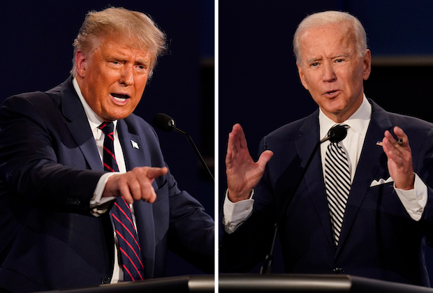

President Donald Trump and Democratic presidential candidate former Vice President Joe Biden,
are seen during the first presidential debate on September 29, 2020,at Case Western University and Cleveland Clinic,
in Cleveland, Ohio
Where Trump and Biden Stand on Immigration, Border Wall and ICE
Immigration formed a core theme of President Trump's 2016 campaign and since taking office,
he has sought to reduce nearly all forms of immigration to the U.S.
Among Mr. Trump's changes: border-wall construction, bans on travel from a number of countries and a
temporary closure of the southern border to asylum seekers for the duration of the coronavirus pandemic.
He also attempted to end the Deferred Action for Childhood Arrivals program
Where Trump and Biden Stand on Tax Policy
There is an enormous gulf between the presidential candidates on tax policy—with trillions of dollars at stake over the next decade.
President Trump is campaigning to continue his administration's biggest legislative achievement, the 2017 tax law, which lowered taxes
on businesses and individuals while increasing budget deficits. Mr. Biden proposes big tax increases on corporations and the wealthy
to pay for social programs.